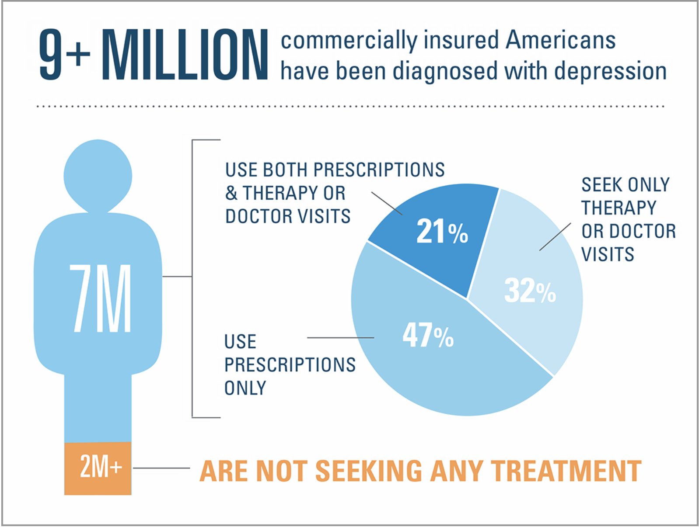

Introduction
How do we treat depression
Depression, also known as Major Depressive Disorder (MDD), is the leading cause of disability in the world,
and it is a very common disorder that. It causes a persistent sense of emotional sadness and makes it difficult
to do other jobs. The onset of depression is not limited by age, race, or physical health. Depression can also
lead to other mental illnesses and can have serious consequences. The reason why I want to explore this topic is
because it takes a long time to find effective treatments for depression. Even though there are many treatments
available that have been proven to be effective. However, not all methods are effective for different people.
Sometimes multiple treatments have to be tried to find one that works, but this can be a very time-consuming and
frustrating process. The risk of recurrence of depression during this process is high as well as the financial
constraints. So far, we still can't say that there is one approach that is the most effective but is there one
approach that will allow most people to alleviate their depressive symptoms. And it can reduce the burden
without excessive risk of relapse and financial difficulties.
More than 9 million commercially insured Americans have been diagnosed with depression - a number that has
climbed 33 percent since 2013. In fact, 89 percent of American adults say depression is a very serious or
somewhat serious condition. Yet, 2 million of those diagnosed with depression in 2016 did not seek treatment. As
more and more medication and behavioral treatment options become available, it is critical to connect people
with personalized treatment that works for them.
| source |
So therefore I used some data that can find out which treatment are the most effective for the Major
Depression Disorder. And by applying different method on it I will try to give some suggestion about treatment
for the patients.

|
Question that I will answer in this project:
1. Do we have effective way to treat depression.
2. Is there a most common way to treat depression?
Question that are very important to Major Depressive Disorder (MDD):
1. How many people can get rid of depression? And what treatment do they have
2. How do we measure if a treatment is effective?
3. Is there treatment difference between different country? Like US and China
4. Usually how many treatments patient need to try to find the best one?
5. whether it is possible that no treatment will work for a person.
6. How do we diagnose someone as MDD?
7. Can surgery be used to completely treat depression?
8. Is there a high probability of relapse? Is there a high likelihood of worsening depression?
9. How depression treatment affects your daily life?
10. Do patients with depression have the same characteristics